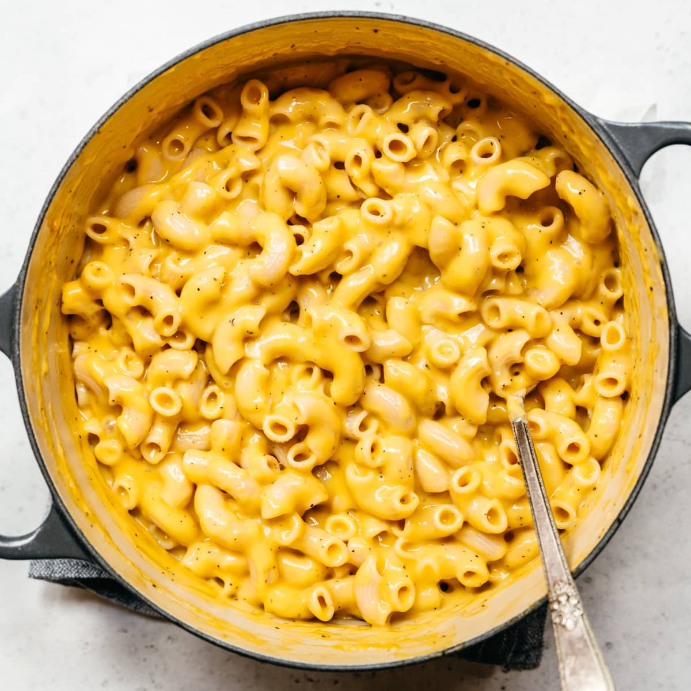

Vegan Mac n Cheese

Creamy and delicious vegan mac n cheese is the ultimate comfort food!
The vegan version of this recipe contains up to 40% less calories compared to a regular mac n cheese.
You can use any pasta shape you like!
Ingredients:
- 500g any pasta shape (use lentil pasta for a protein boost!)
- 2 large starchy potatoes
- 1 large carrot
- 1/2 cup vegetable oil
- 3 cloves garlic
- 5 Tbsp nutritional yeast
- 3 Tbsp smoked paprika
- Salt and pepper to taste
Preparation:
- Roughly cut the potatoes and the carrot into even pieces so they boil evenly.
- Boil them in salted water until fork-tender and drain.
- In a blender add the potatoes and the carrot along with the oil.
- Blend the mixture until smooth.
- Add the spices and nutritional yeast.
- Add salt and pepper to taste.
- If the sauce is too thick add some water, if it is too runny, you can add some potato or corn starch.
- Boil your pasta according to package instructions.
- Mix the pasta with the sauce.
- Plate and enjoy!